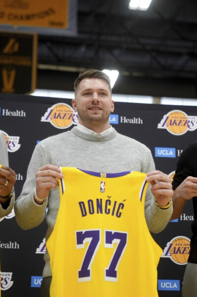
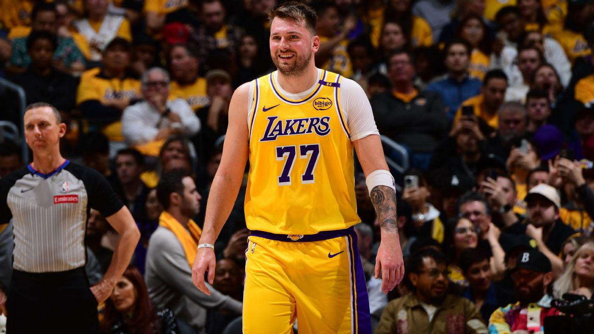
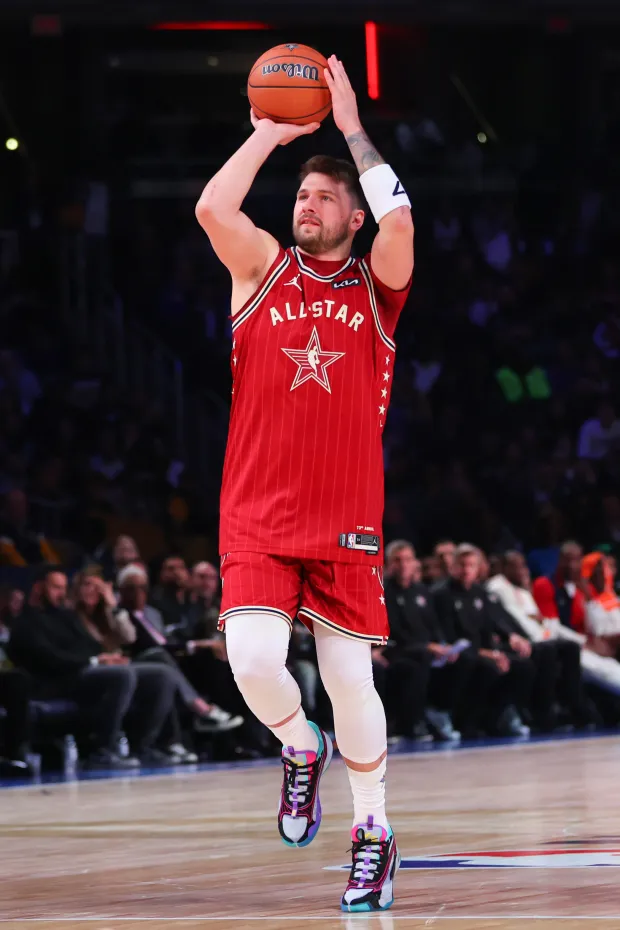
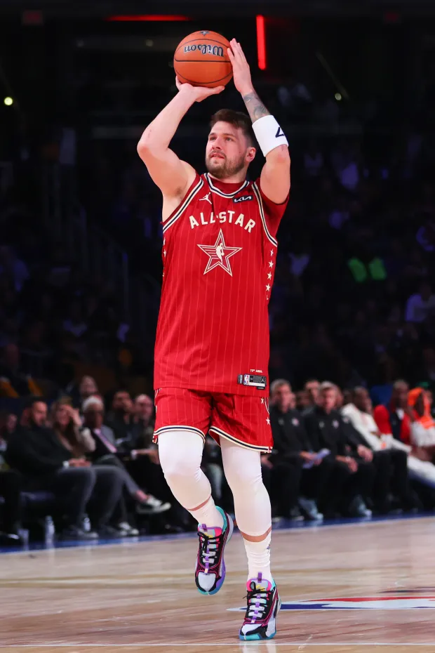

Luka celebrating in Feb. 22 win over Denver, 123-100
Welcome to the digital shrine for Luka Doncic, our future. Born and raised in Slovenia, Luka began playing professional basketball for Real Madrid at age 13. Since then, he's made the jump from the EuroLeague to the NBA — and now at 25 years old, he's added lots of accolades to an already stacked resume. Luka carried the Dallas Mavericks to an NBA Finals appearance last season, but (for unknown/not smart reasons) was traded to the Los Angeles Lakers this February.
Here you will find all of Luka's greatest work, including a playoff buzzer-beating silencer over Rudy Gobert, highlights of his start in LA and more!
If you don't believe me, look at his Basketball Reference Stats page. Don't know why the Mavericks would trade him, but Lakers nation will happily take him.
Check out video highlights here and quotes here!
 
 
